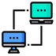

Redes e Infraestrutura
TCP/IP
DHCP
DNS
Switches
Roteadores
Cabeamento
Wi-Fi Corporativo
Atuação com suporte técnico, cabeamento estruturado, Active Directory, GPO, redes corporativas, manutenção de estações e automação de processos em ambientes corporativos.
Sou formado em Análise e Desenvolvimento de Sistemas e Bacharel em Engenharia de Software.
Atualmente curso Redes de Computadores, com foco em infraestrutura, redes, suporte técnico
e ambientes corporativos.
Tenho experiência com manutenção de computadores, cabeamento estruturado, mapeamento de rede,
configuração de estações, ingresso de máquinas em domínio, Active Directory, GPO,
documentação técnica e automação de tarefas para padronização de ambientes.
Integração de infraestrutura com foco em redes, cabeamento estruturado, organização de ambiente técnico e padronização de estações em contexto corporativo.

Projeto de modernização de notebooks com foco em upgrades, otimização do Windows, reaproveitamento de hardware e padronização de equipamentos corporativos.
Planilha financeira automatizada, ideal para organizar despesas.

Redes Sociais foi criada como um hub de links, reunindo todos os meus perfis profissionais e acesso direto ao meu portfólio.
Projetos de desenvolvimento web criados como complemento técnico, reunindo estudos, interfaces, aplicações e práticas com tecnologias voltadas ao desenvolvimento Full Stack.